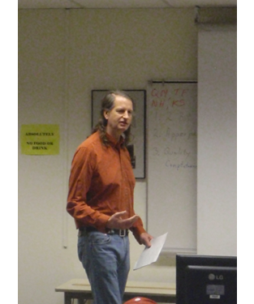

BIO
Gerald Saul (born 1964), Canadian experimental film maker and professor at the University of Regina has deep prairie roots. His parents met and married in Winnipeg, before moving to Regina with work. While articling as a Chartered Accountant, he met his wife Nettie. She had just moved in to Winnipeg from her family farm in rural Manitoba. The family moved to Regina when Gerald was 4 years of age.
Saul's interest in filmmaking began with the creation of 8mm films with his friends beginning in grade 5. He learned how to use video while attending Campbell Collegiate. At this time, filmmaking was an unrealistic occupation in Saskatchewan and Saul put most of his attention into the study of math and computers. Saul attended the University of Regina, beginning in 1982, majoring in computer science and taking occasional film courses as electives. In 1984 he took the plunge, changing majors mere days before the beginning of the fall term.
He joined the Saskatchewan Filmpool Co-operative later that year and through the co-op and the university he found a supportive and like-minded community within which to practice his craft. Saul served many years on the Filmpool Board of Directors including multiple years as its president.
He left the university that fall, just a few courses short of graduating, and funded by workers compensation, he declared himself an independent artist. The completion of the 16mm feature film "Wheat Soup" with long time collaborator Brian Stockton would solidify his reputation and helped to garner him grants from the Saskatchewan Arts Board and the Canada Council. It was in working on "Wheat Soup" that Saul began closely considering the physical aspects of the celluloid film. His next significant works would each bring together formal practices with humour and issues of personal identity. Saul would return to university in 1993 to complete his BFA degree. From 1994-1996 he attended York University in Toronto and completed an MFA in film production and studies. However, Regina was always the source of his inspiration. In 1999 he was hired by his alma mater where he is now an associate professor.